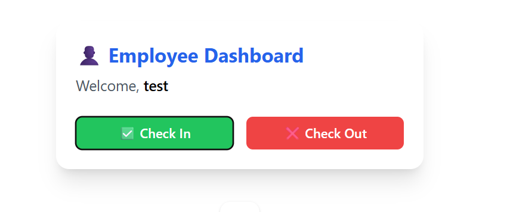
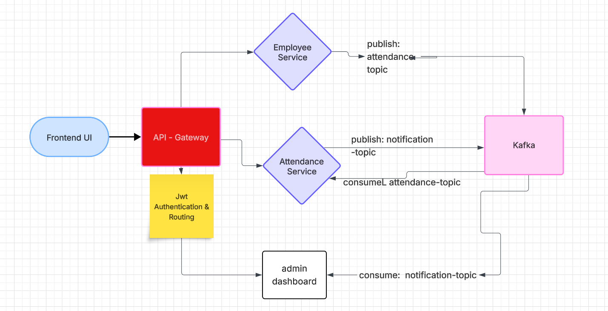

Project 2
Employee Check-in/Check-out System
A secure microservice-based system for managing employee attendance records through authenticated REST APIs and a centralized gateway.

A full-stack microservices application that manages employee check-ins and check-outs, secured through robust JWT-based authentication enforced by Spring Cloud Gateway. Built using Spring Boot, Angular, and Docker, the system showcases a modular, containerized architecture with centralized API routing and stateless authentication. This architecture ensures secure, scalable, and maintainable operations across microservices.
Architecture
Tech Stack
- Angular: Frontend UI built with reactive forms and BehaviorSubject for real-time responsiveness
- Spring Boot: Backend microservices providing RESTful APIs for employee and check-in/out management
- Spring Security + JWT: Stateless authentication using JSON Web Tokens; secure role-based access
- Spring Cloud Gateway: Acts as API Gateway, routing and securing internal service calls
- Apache Kafka: Event-driven messaging pipeline to decouple services and enable asynchronous processing
- MongoDB: NoSQL database used for storing log entries and event streams
- MySQL: Relational database for employee records and check-in/out data
- Docker: Service containerization using Docker Compose for unified development and deployment
✨ Features
- Secure login and role-based access using JWT tokens
- Centralized API routing with authentication enforcement via Spring Cloud Gateway
- Real-time employee check-in and check-out with timestamp logging
- Modular microservice design for scalability and maintainability
Structure
Spring Cloud Gateway
- Acts as the single entry point to all backend microservices
- Performs routing and security filtering
JWT Authentication
- All API access is secured using stateless JWT-based authentication
- Gateway validates tokens before forwarding requests to internal services
Kafka
- Acts as an asynchronous message broker between services.
- Handles messages microservices.
- Tech: Apache Kafka, Kafka Topics, Spring Kafka (Producer/Consumer), Kafka-python, Docker Compose
Microservices
- Attendance Service: Handles time-stamped check-ins and check-outs
- Employee Service: Manages employee login and registration and role-based access
- Admin-DashBoard Manages employee check-in and check-out history
Persistence
- MySQL with Spring Data JPA for storing employee activity and profile data
Containerization
- Fully containerized using Docker and Docker Compose for local and production deployments